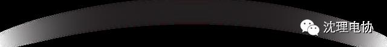
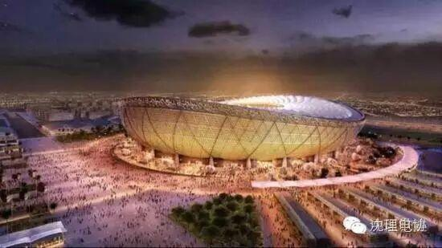
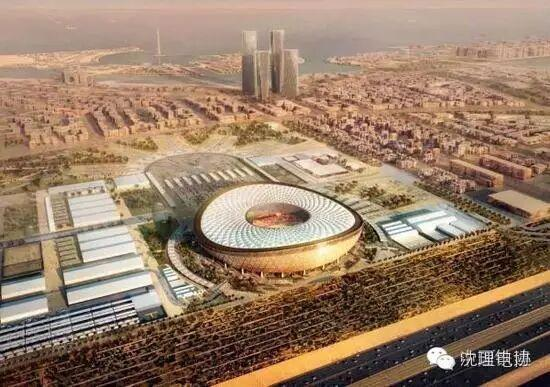
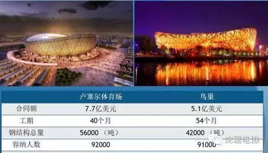
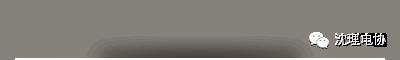
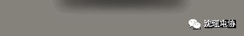

中国“国家队”打进2022年卡塔尔世界杯，不过是项目工程

卡塔尔世界杯主体育场中国造



据国务院国资委新闻中心官方微博消息，当地时间11月28日，中国铁建股份有限公司（中国铁建，601186）与卡塔尔HBK公司组成联合体，在多哈签约2022年世界杯主体育场——卢塞尔体育场建设项目。据悉，这是中国公司首次以主承包商身份承建世界杯主体育场。

卢塞尔体育场是2022年卡塔尔世界杯赛官方确定的主体育场，将担当开幕式、揭幕赛、决赛、闭幕式等四项重任，建成后将成为卡塔尔的国际化地标性建筑。


该项目合同额约7.67亿美元，中国铁建占比45%。项目总工期40个月，计划建设92000个座位，总用钢量10万吨，层膜结构达4.5万平方米，是目前世界最大的屋面膜结构施工项目。

卡塔尔交付与遗产最高委员会秘书长哈森·艾利·塔哈瓦迪在签约仪式上表示，非常高兴将卢塞尔体育场项目主合同授予HBK和中国铁建组成的联合体。卢塞尔体育场将成为2022年世界杯比赛的中心艺术品，赛后也将成为卢塞尔城必不可少的遗产。




公众号
sylgdzxh

沈阳理工大学电子技术与应用协会
信息部
编辑：赵玉泉